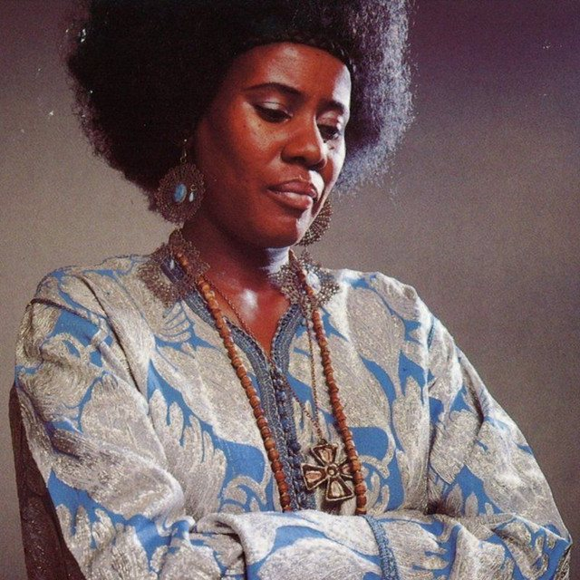

The Eclectic Polymath Podcast · Archive
#164 Kamasi Washington: South LA, Spiritual Jazz, and the Sound of the Infinite
About this episode
Kamasi Washington didn’t emerge from nowhere. His sound was built inside a South Los Angeles musical ecosystem that had been developing for decades.
This episode traces Washington’s path from family mentorship and the World Stage in Leimert Park to the West Coast Get Down collective and his years working behind the scenes with artists like Snoop Dogg. We get into the community that shaped him, the marathon recording sessions that produced an enormous body of work, and how albums like The Epic helped push expansive, spiritual jazz back into the cultural conversation.
Key points
- His sound was built inside a South Los Angeles musical ecosystem that had been developing for decades.
- This episode traces Washington’s path from family mentorship and the World Stage in Leimert Park to the West Coast Get Down collective and his years working behind the scenes with artists like Snoop Dogg.
- We get into the community that shaped him, the marathon recording sessions that produced an enormous body of work, and how albums like The Epic helped push expansive, spiritual jazz back into the cultural conversation.
- But Washington’s music is bigger than revival.
- This is a story about South LA, collective creativity, and how one musician turned a deeply local tradition into a vision of jazz that feels almost infinite.
More like this
#067 The Kardashians: Armenian Family Prophecy and the Making of an American DynastyJune 28, 202658:06 #219 The Grove & The Americana: Fake Towns, Real EmpireOctober 17, 202649:36#220 Nathan Fielder: The Man Who Rehearsed RealityOctober 17, 202650:01
#219 The Grove & The Americana: Fake Towns, Real EmpireOctober 17, 202649:36#220 Nathan Fielder: The Man Who Rehearsed RealityOctober 17, 202650:01

#064 Alice Coltrane: Grief, Devotion, and the Sacred Journey of Spiritual JazzJune 26, 202646:02#219 The Grove & The Americana: Fake Towns, Real EmpireOctober 17, 202649:36#220 Nathan Fielder: The Man Who Rehearsed RealityOctober 17, 202650:01